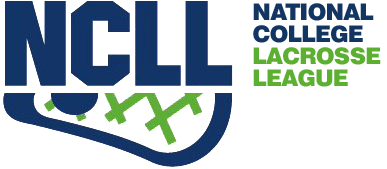

COVID-19 Update
Due to the COVID-19 pandemic, the 2021 season is currently cancelled. In the fall, the team conducted some small group practices in the absence of intercollegiate play, and to adhere to COVID-19 community guidelines. Practices were limited to a maximum 30 players. Huddles and drills were spaced to ensure social distancing. Masks were encouraged while playing and required during huddles and before and after practice.
Upcoming
This spring, intercollegiate play is still suspended, but the University has allowed us some field times to practice like in the fall. These practices are informal and free of charge. Those interested in Club Lacrosse but have not been to a practice yet are more than welcome to participate. The practices run at the turf Mitchell Field on the following dates and times: April 6 8-9:30pm, April 13 9-10:30pm, April 20 8-9:30pm, April 27 9-10:30pm. These sessions will be an opportunity to have some fun on the field before summer break and get some shooting and scrimmages in.
Competition
Traditionally, the fall season consists of a weekly practice and some scrimmages against teams from Michigan, Ohio, and Indiana. The team also competes in a tournament hosted by the University of Wisconsin-Madison, which headlines the fall season. In the spring, we compete in the NCLL Midwest division. This division includes us, Ohio University, Ohio State University, and the University of Cincinatti. The winner of this division moves on to the NCLL championships at the Naval Academy in Annapolis, MD. Here the 8 division winners compete for the national championship.
